Film Production
Behind the scenes and moments from film productions, camera setups, shooting environments and on-set impressions.
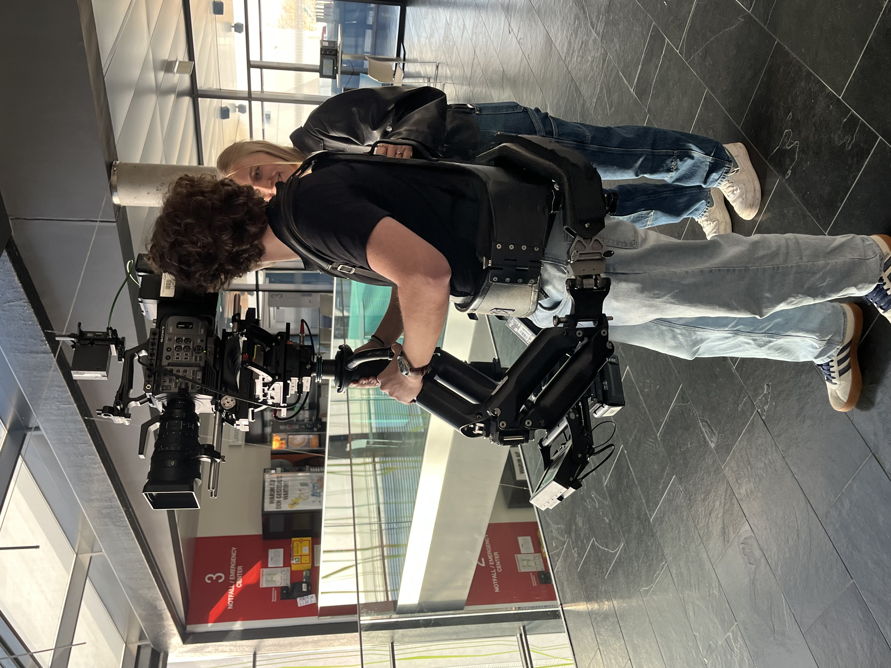
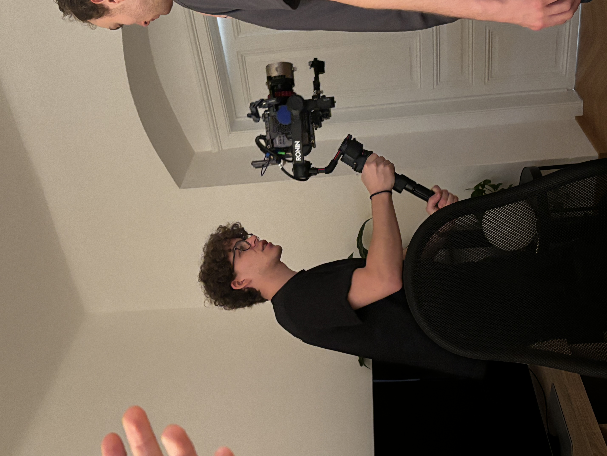
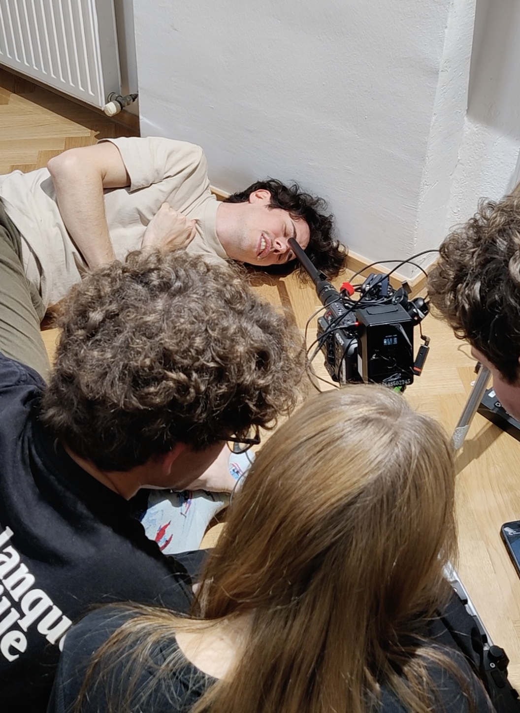
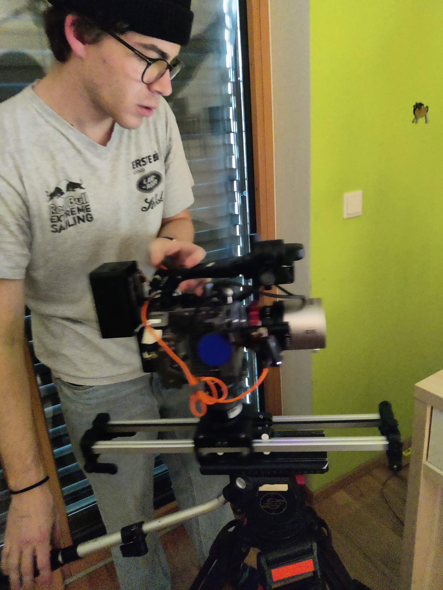

Behind the scenes and moments from film productions, camera setups, shooting environments and on-set impressions.




Behind the scenes and production moments from the DJ course project.
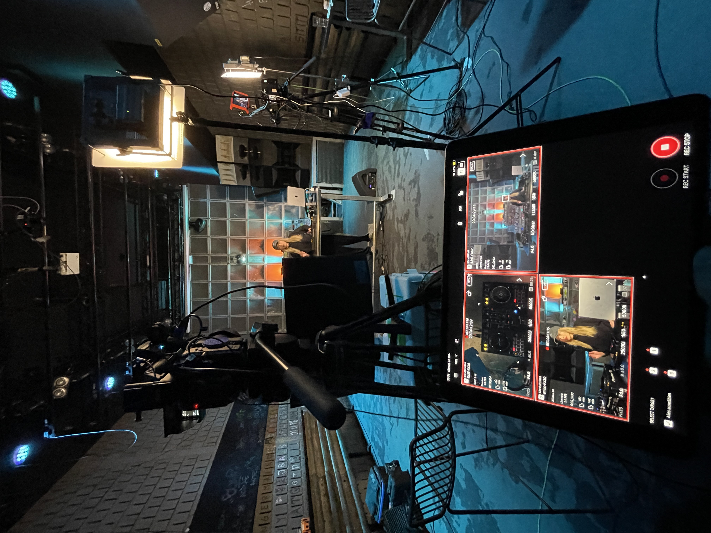
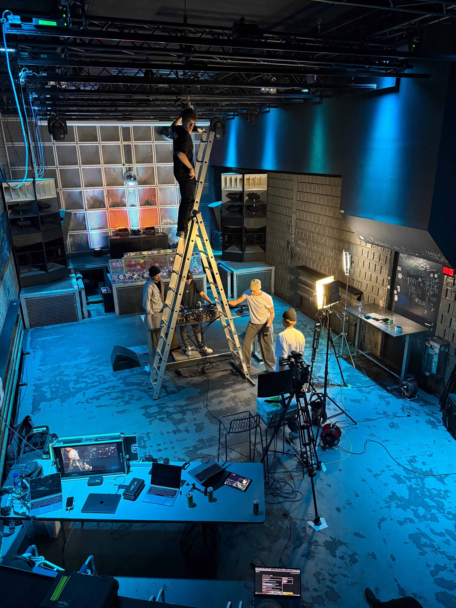
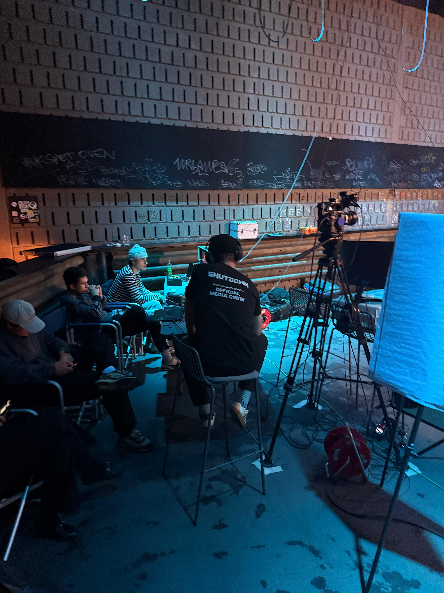
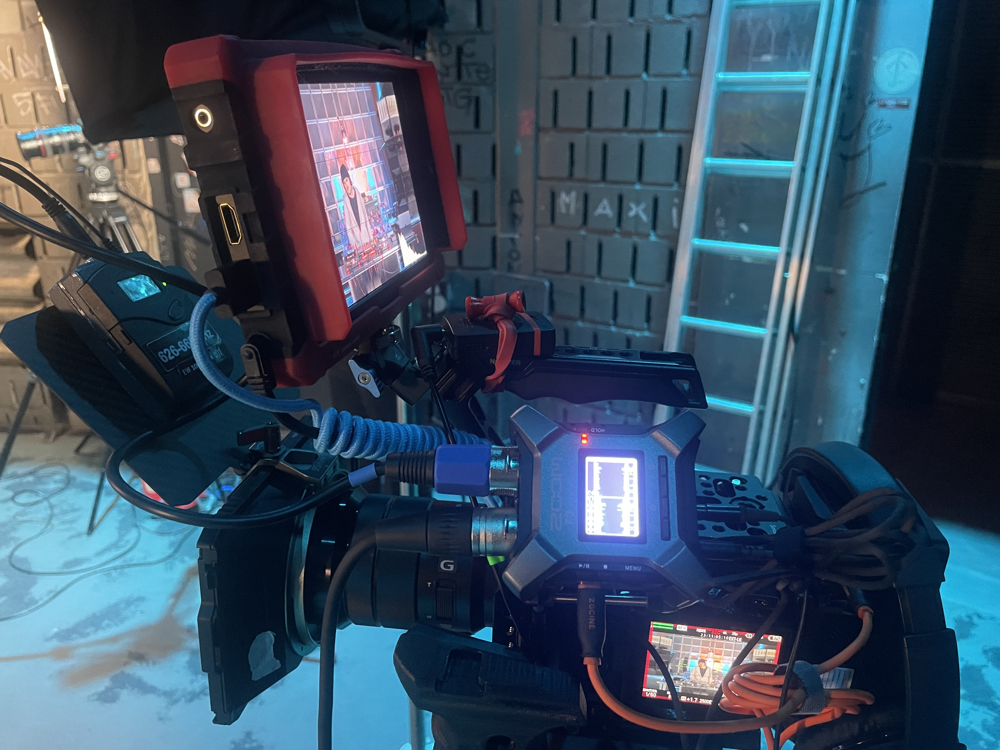
Behind the scenes moments from concert productions and live events. Camera work, stage environments and impressions from live music sets.
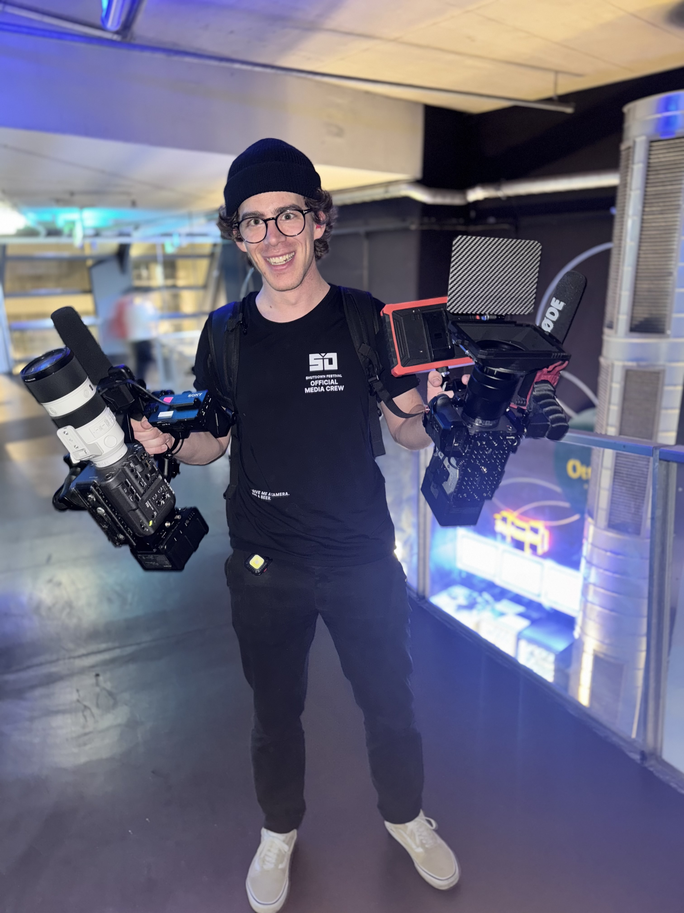
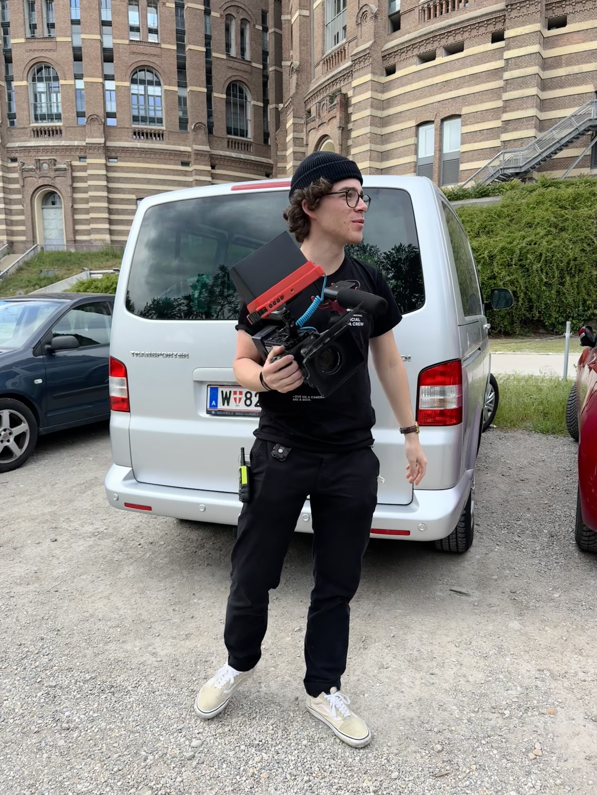

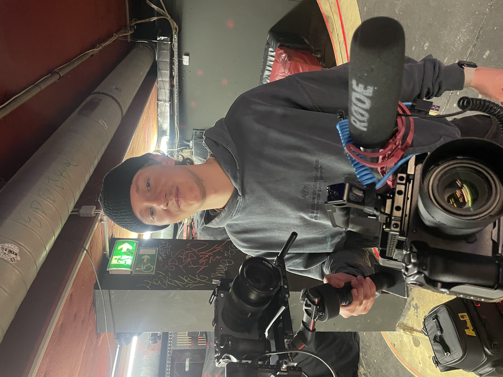
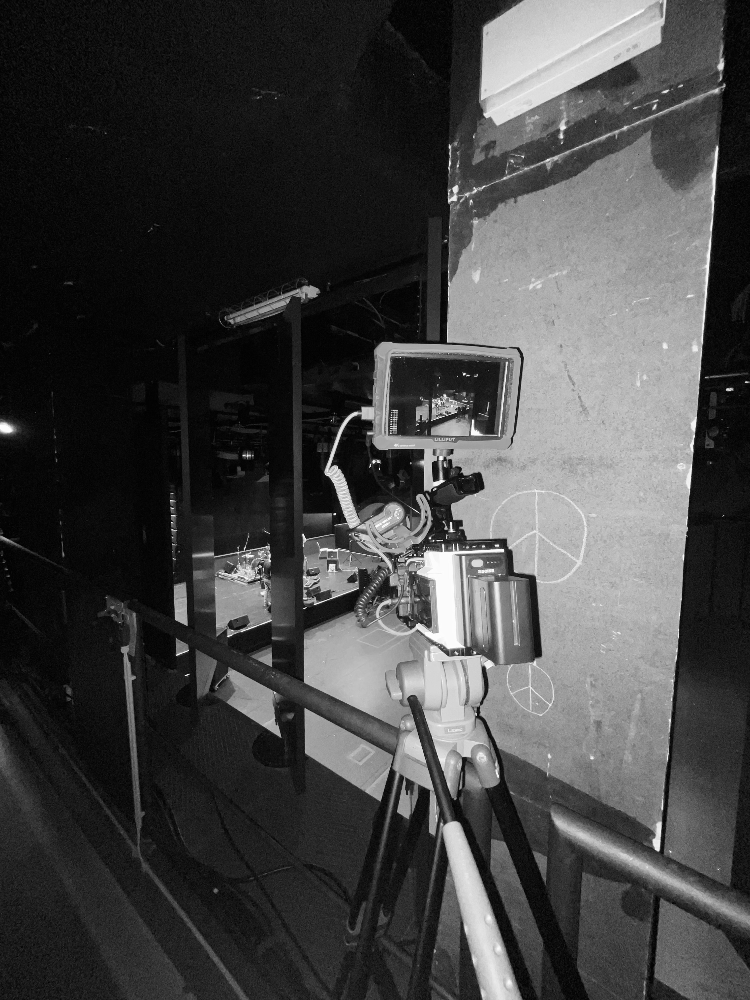
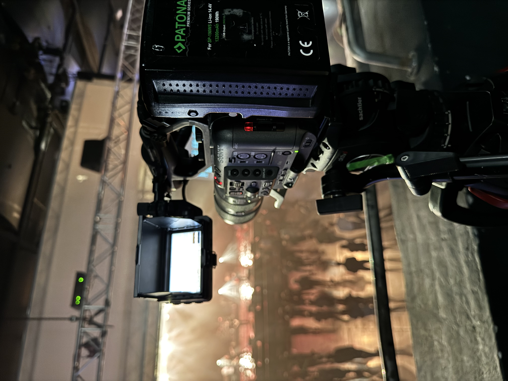
Behind the scenes and camera work during the Shutdown Festival production. FPV drone operations, stage visuals and moments from the festival environment.

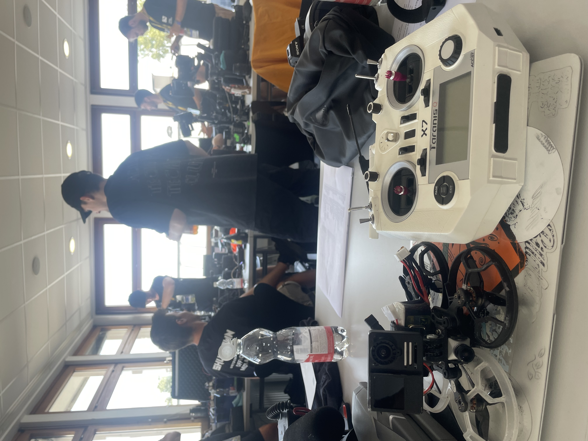